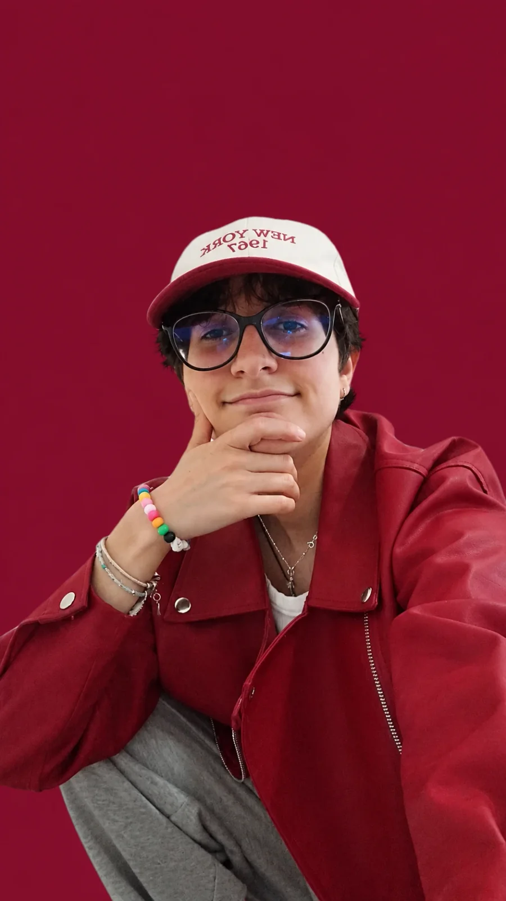

Saray

Webs y sistemas para tu negocio. ¿Hablamos?
Cuéntame tu ideaSobre mí
Soy Saray, desarrolladora web full stack junior. Me gusta convertir las necesidades de un negocio en webs, landings, CRMs y paneles de inventario que sean claros, cuidados y fáciles de usar. Trabajo cerca de cada cliente para entender qué necesita de verdad y construirlo paso a paso.
Qué puedo hacer¿En qué puedo ayudarte?
-
Webs y landings
Sitios claros y rápidos que presentan tu negocio y convierten visitas en clientes.
-
Sistemas a medida (CRM)
Herramientas para gestionar tus clientes y tu día a día sin hojas de cálculo interminables.
-
Paneles de inventario
Controla tu stock, entradas y salidas en un panel sencillo y siempre actualizado.
-
Diseño responsive
Una web que se ve y funciona bien en móvil, tablet y ordenador.
Así trabajamos juntos
-
Conversamos
Me cuentas qué necesita tu negocio y a quién quieres llegar. Sin tecnicismos.
-
Diseñamos
Te enseño cómo se verá la web o el panel antes de programar nada.
-
Construyo
Programo por partes y te voy enseñando avances para que puedas opinar a tiempo.
-
Entrego y acompaño
Publico la web, te explico cómo usarla y sigo cerca por si surge algo.
Proyectos
Mi caja de herramientas
- HTML
- CSS
- JavaScript
- PHP
- Next.js
- Git / GitHub
- Vercel
- Tailwind
- GSAP
Preguntas frecuentes
Lo que suelen preguntarme antes de empezar.
¿Qué necesito para empezar?
Solo una idea clara de lo que quieres conseguir. Si ya tienes logo, textos o fotos, vamos más rápido; si no, lo resolvemos juntos.
¿Tienes otra duda? Escríbeme